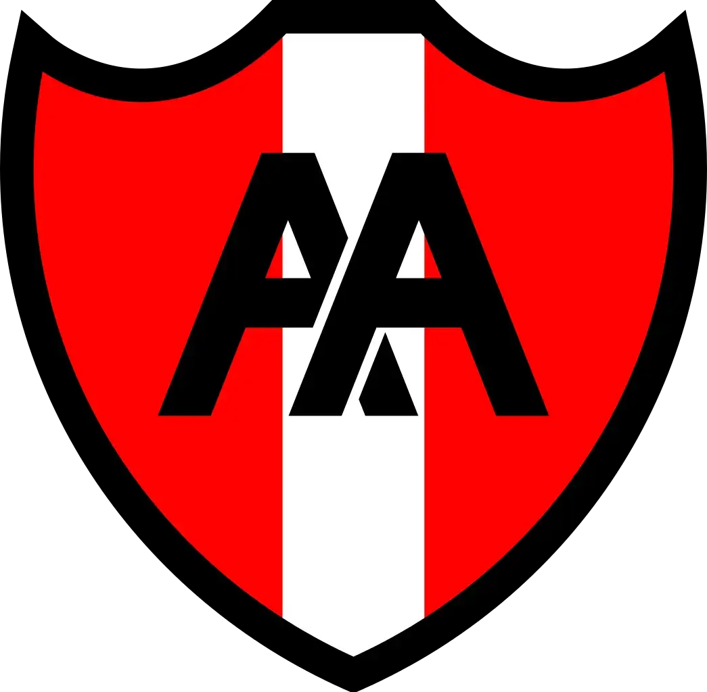

TOP 12 URBA - FECHA 9
|  | Alumni | 9 - 22 (B) | BELGRANO |  |
 |
BUENOS AIRES | 26 - 17 | Hindú |  |
| NEWMAN | 59 (B) - 15 | San Luis |  |
|
 |
Atlético del Rosario | 27 - 27 | Regatas | |
 |
Champagnat | 23 - 28 | CASI |  |
 |
SIC | 30 - 31 | CUBA |
HAY FINAL DEFINIDA PARA EL TORNEO SUDAMERICANO
Dogos XV jugará el próximo sábado la final del Súper Rugby Américas en el CASI tras ganarle a 17-14 en una muy disputada semifinal, que se definió con un penal desde 45 metros en muerte súbita.
Por el otro lado, el conjunto de Buenos Aires recibirá la final del segundo Súper Rugby Américas al derrotar al campeón defensor Peñarol Rugby por 50-27.

¿QUIÉNES SOMOS?
Somos un grupo de amigos que formamos un programa de radio en 2016, enfocándonos en el rugby nacional e internacional, y otros deportes. Podés escucharnos los sábados de 13 a 14 horas.
IR AL SITIO WEB OFICIAL DE LA URBA:

EFEMÉRIDES
Recordá el gran triunfo de Los Pumas vs Nueva Zelanda del 2022 por 25-18 acá: